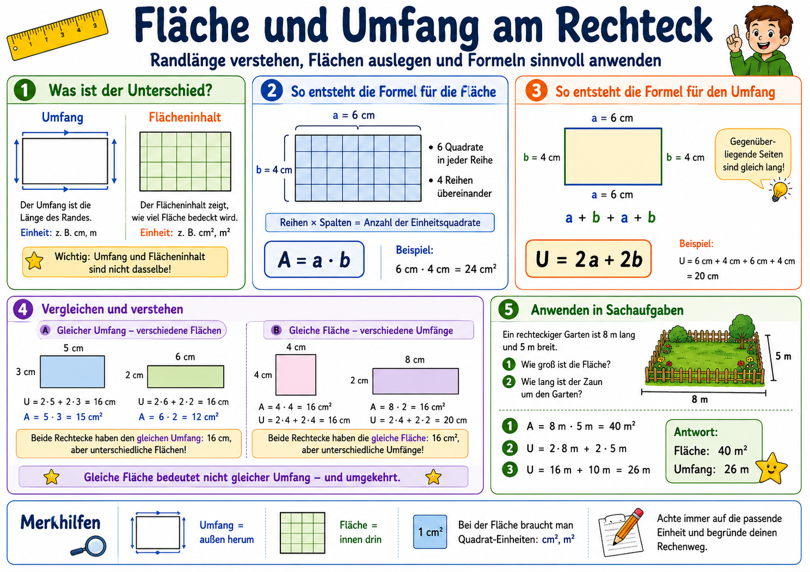
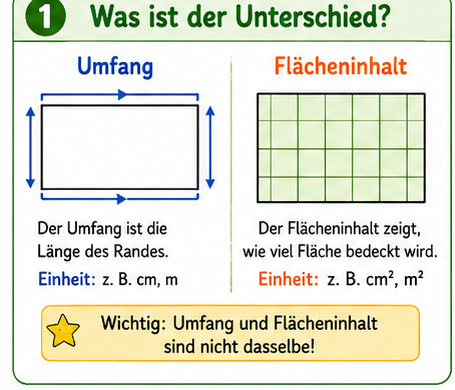
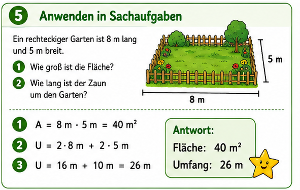

Dieses Modul setzt den fachlichen Kern deiner Reihe um: Umfang als Randlaenge,
Flaecheninhalt als Bedeckung mit Einheitsquadraten, danach die Verallgemeinerung
zu U = 2a + 2b und A = a * b.

Die Grafik wird im Modul als Leitfaden genutzt. In der Lernreise arbeiten wir mit
thematisch passenden Ausschnitten und eigenen Aufgabenformaten.
Eigenes Lernkonzept fuer Klasse 5
Aufbau nach deinem Kontext: erst tragfaehige Grundvorstellungen, dann Formelbildung,
dann Anwendung und Begruendung.
1. Unterscheiden
Umfang ist Randlaenge, Flaecheninhalt ist Innenflaeche.
2. Begruenden
Mit Reihen, Spalten und Einheitsquadraten zur Formel.
3. Variieren
Gleicher Umfang, verschiedene Flaechen und umgekehrt.
4. Anwenden
Sachaufgaben, fehlende Seiten und Einheiten sicher loesen.
Slice-Explorer (wie in den Geschichtsmodulen)
Klicke eine Station an. Du bekommst Bildausschnitt, Kernidee und mathematische Bruecke.

Formeln verstehend aufbauen
Rechteck mit Einheitsquadraten auslegen: Anzahl der Quadrate ist der Flaecheninhalt.
Zeilen mal Spalten fuehrt zu A = a * b.
Rand ablaufen: zwei lange und zwei kurze Seiten fuehren zu U = 2a + 2b.
Immer Einheiten sauber angeben: U in cm/m, A in cm^2/m^2.

Sachaufgaben sind der Uebergang vom Verfahren zur Anwendung.
Lehrplanbezug und Aufgabenabgleich
Der Schwerpunkt liegt auf Verstehen und Begruenden (nicht nur Einsetzen in Formeln):
genau passend zum KC Mathematik Gymnasium Niedersachsen (Doppelschuljahrgang 5/6).
Formeln fuer U und A am Rechteck aus Grundvorstellungen entwickeln und deuten.
Rechtecke und einfache zusammengesetzte Figuren berechnen und Ergebnisse beurteilen.
Kurzdiagnosen mit Skizze, Einheit und Begruendung statt reiner Rechenroutine.
Die Runde wird jedes Mal neu erstellt. Du kannst Schwierigkeit, Umfang und Aufgabentypen steuern.
Ziel: Verstehen plus sichere Anwendung.
Diagnose-Check (Formelverstaendnis + Anwendung)
12 dynamische Fragen mit direkter Rueckmeldung. Jeder Neustart mischt neu.
Punkte: 0 / 12
Noch nicht gestartet.
Klicke auf "Check starten".
Mini-Reflexion (nicht automatisch bewertet)
1. Erklaere in einem Satz den Unterschied zwischen Umfang und Flaecheninhalt.
2. Begruende, warum bei A = a * b die Einheit ein Quadrat (z. B. cm^2) ist.
3. Erklaere an einem Beispiel, wie du eine fehlende Seite aus dem Umfang berechnest.